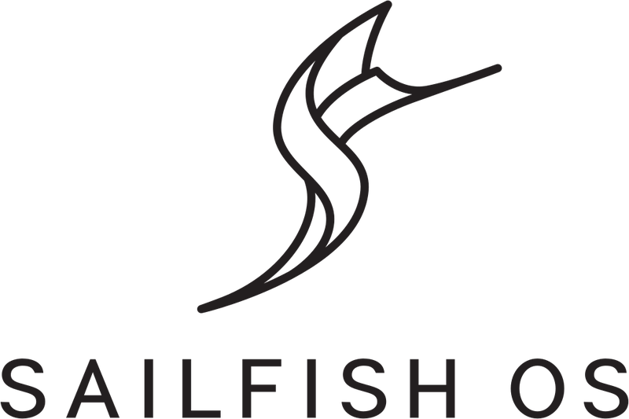

세일피시 OS Sailfish OS
세일피시 OS(Sailfish OS)는 핀란드의 Jolla와 Sailfish Alliance가 개발 중인 모바일 운영체제이다. Intel과 Nokia가 만들던 MeeGo 운영 체제에 기반한 Mer 코어를 바탕으로 한다.
최종 업데이트

세일피시 OS는 어떤 브랜드인가
세일피시 OS는 모바일 기기를 위한 운영체제로, 핀란드의 Jolla와 Sailfish Alliance가 개발하고 있다. 이 운영체제는 Intel과 Nokia가 만들던 MeeGo 운영 체제에 기반한 Mer 코어, 커스텀 빌드 사용자 환경, HTML5, QML, Qt로 구성된다.
첫 탑재 스마트폰인 jolla smartphone은 2013년 5월 20일에 발표되었고 가격은 399유로로 책정되었다. 개발사 Jolla에 따르면 세일피시 OS용 애플리케이션을 포함해 대부분의 MeeGo 및 안드로이드 기반 애플리케이션을 구동할 수 있을 것으로 전망된다.
다만 커널 수준의 지원이 필요해 단순 포팅된 기기에서는 안드로이드 앱 실행을 지원하지 않는다. 지원 기기로는 jolla, jolla tablet, jolla C 등이 있다.
세일피시 OS는 어떻게 시작되고 성장했나
세일피시 OS는 Intel과 Nokia가 만들던 MeeGo 운영 체제에 기반해 개발되었다. 개발은 핀란드의 Jolla와 Sailfish Alliance가 맡고 있다.
이 운영체제를 탑재한 첫 스마트폰인 jolla smartphone은 2013년 5월 20일에 발표되었으며, 가격은 399유로로 책정되었다. 플랫폼은 Mer 코어, 커스텀 빌드 사용자 환경, HTML5, QML, Qt로 구성된다.
2015년 9월 24일에는 Sailfish 2.0 Eineheminlampi 업데이트가 있었다.
세일피시 OS의 브랜드 아이덴티티는 무엇인가
MeeGo에 기반한 Mer 코어 위에 Qt와 QML 등으로 구성되며, 대부분의 MeeGo 및 안드로이드 기반 애플리케이션을 구동할 수 있을 것으로 전망되는 Jolla의 모바일 운영체제이다.
세일피시 OS의 대표 제품과 서비스는 무엇인가
세일피시 OS를 탑재한 첫 스마트폰은 jolla smartphone이다. 지원 기기로는 jolla, jolla tablet, jolla C가 있다.
그 밖에 Intex Aqua Fish, Liquidmorphium Turing Phone, mi-Fone (mobile), PuzzlePhone, Oysters SF, Ermak BMR, Ermak 50이 지원 기기 목록에 올라 있으며, Xperia Series도 포함된다. 소프트웨어는 Mer 코어, 커스텀 빌드 사용자 환경, HTML5, QML, Qt로 구성된다.
세일피시 OS는 지금 어떤 상태인가
세일피시 OS는 Jolla와 Sailfish Alliance가 개발 중인 운영체제이다. 2015년 9월 24일 Sailfish 2.0 Eineheminlampi 업데이트가 있었다.
지원 기기 목록에는 jolla 계열 기기 외에 Intex Aqua Fish, PuzzlePhone, Ermak 50, Xperia Series 등이 올라 있다. 안드로이드 앱은 커널 지원이 필요해 단순 포팅된 기기에서는 실행되지 않는다.
세일피시 OS 로고는 어떻게 변해왔나
자주 묻는 질문
세일피시 OS는 어떤 산업의 브랜드인가요?
세일피시 OS는 기술·전자 분야의 브랜드입니다.
세일피시 OS의 브랜드 아이덴티티는 무엇인가요?
MeeGo에 기반한 Mer 코어 위에 Qt와 QML 등으로 구성되며, 대부분의 MeeGo 및 안드로이드 기반 애플리케이션을 구동할 수 있을 것으로 전망되는 Jolla의 모바일 운영체제이다.
세일피시 OS의 대표 제품은 무엇인가요?
세일피시 OS를 탑재한 첫 스마트폰은 jolla smartphone이다.
세일피시 OS는 현재 어떤 상태인가요?
세일피시 OS는 Jolla와 Sailfish Alliance가 개발 중인 운영체제이다.
세일피시 OS의 공식 웹사이트는 어디인가요?
세일피시 OS의 공식 웹사이트는 https://sailfishos.org/ 입니다.
출처와 검증
세일피시 OS 관련 참고: 공식 웹사이트 · 위키데이터 Q81229 · 한국어 위키백과 · 영어 위키백과. 브랜드명은 한글과 원어를 함께 표기하되 데이터에 없는 표기는 만들지 않습니다. 기원 국가·설립연도는 검수된 정의문에서 확인된 값을 우선하고, 없을 때만 공식 웹사이트 URL이 일치하는 위키데이터 개체의 값을 씁니다. 위키데이터 값은 2026-11-11 기준입니다.